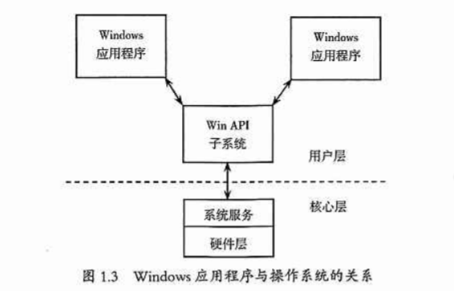

# Windows 操作系统
本书研究 Windows 平台上的加密与解密，因此要求读者必须对操作系统有所了解。建议读者阅读 Windows 操作系统原理方面的书籍，这对深入理解本书的后续内容很有帮助。
# Win32 API 函数
现在很多讲程序设计的书都基于 MFC 库和 OWL 库的 Windows 设计，对 Windows 实现细节鲜有讨论，而调试程序是要和系统底层打交道的，所以有必要掌握一些 API 函数的知识。
对初学者来说，API 函数也许是一个时常耳闻却感觉有些神秘的东西。 API 的英文全称为 "Application Programming Interface" (应用程序编程接口), 要想理解这个定义，需要追溯操作系统的发展历史。 当 Windows 操作系统开始占据主导地位的时候，开发 Windows 平台上的应用程序成为人们的需要。 而在 Windows 程序设计发展的初期，Windows 程序员能够使用的编程工具只有 API 函数。这些函数提供应用程序运行所需要的窗口管理、图形设备接口、内存管理等服务功能。 这些功能以函数库的形式组织在一起，形成了 Windows 应用程序编程接口，简称 "Win API", Win API 子系统负责将 API 调用转换成 Windows 操作系统的系统服务调用。 所以，可以认为 API 函数是整个 Windows 框架的基石，它的下面是 Windows 操作系统核心，它的上面则是 Windows 应用程序，如图 1.3 所示。 应用程序开发人员看到的 Windows 操作系统实际上就是 Win API, Windows 操作系统的其他部分对开发人员来说是完全透明的。

用于 16 位 Windows 的 API (Windows 1.0~Windows 3.1) 称作 "Win16", 用于 32 位 Windows 的 API ( Windows 9x/NT/2000/XP/7/10 ) 称作 "Win32", 64 位 Windows API 的名称和功能基本没有变化，还是使用 Win32 的函数名，只不过是用 64 位代码实现的。 API 函数调用在从 Win16 到 Win32 的转变中保持兼容，并在数量和功能上不断增强 - Windows 1.0 只支持不到 450 个函数调用，现在已有几千个函数了。
所有 32 位 Windows 都支持 Win16 API (以确保与旧的应用程序兼容) 和 Win32 API (以运行新的应用程序), 非常有趣的是，Windows NT/2000/xP/7 与 Windows 9x 的工作方式不同。 在 WindowsNT/2000XKP/7 中，Winl6 函数调用通过一个转换层转换为 Win32 函数调用，然后被操作系统处理。在 Windows 9x 中，该操作正好相反，Win32 函数调用通过转换层转换为 Win16 函数调用，再由操作系统进行处理。
Windows 运转的核心是动态链接。 Windows 提供了丰富的应用程序可利用的函数调用，这些函数采用动态链接库 (DLL) 实现。 在 Windows 9x 中，DLL 通常位于 1WINDOWSYSTEM 子目录中。在 Windows NT72000/XP/7 中，DLL 通常位于系统安装目录的 SYSTEM 和 SYSTEM32 子目录中。
在早期，Windows 的主要部分只需要在 3 个动态链接库中实现，它们分别代表 Windows 的 3 个主要子系统，叫作 Kernel, User 和 GDI。
- Kerel (由 KERNEL32.DLL 实现): 操作系统核心功能服务，包括进程与线程控制、内存管理、文件访问等。
- User (由 USER32.DL. 实现): 负责处理用户接口，包括键盘和鼠标输入、窗口和菜单管理等。
- GDI (由 GD132.DLL 实现): 图形设备接口，允许程序在屏幕和打印机上显示文本和图形。
除了上述模块，Windows 提供了其他 DLL 以支持更多的功能，包括对象安全性、注册表操作 (ADVAPI32. DLL)、通用控件 (COMCTL.32.DL)、公共对话框 (COMDLG32. DLL )、用户界面外壳 SHELL32.DLL) 和网络 (NETAPI32. DLL)。
虽然 Win API 是一个基于 C 语言的接口，但是 Win API 中的函数可以由用不同语言编写的程序调用，因此，我们只要在调用时遵循调用的规范即可。
Unicode 影响着计算机工业的每个部分，对操作系统和编程语言的影响最大。 NT 系统是使用 Unicode 标准字符集重新开发的，其系统核心完全是用 Unicode 函数工作的。 如果希望调用一个 Windows 函数并向它传递一个 ANSI 字符串，系统会先将 ANSI 字符串转换成 Unicode 字符串，再将 Unicode 字符串传递给操作系统。 相反，如果希望函数返回 ANSI 字符串，系统会先将 Unicode 字符串转换成 ANSI 字符串，然后将结果返回应用程序。 也就是说，在 NT 架构下，Win32 API 能接受 Unicode 和 ASCI 两种字符集，而其内核只能使用 Unicode 字符集。 尽管这些操作对用户来说都是透明的，但字符串的转换需要占用系统资源。
在 Win32 API 函数字符集中，"A" 表示 ANSI, "W" 表示 Widechars (即 Unicode), 前者就是通常使用的单字节方式；后者是宽字节方式，以便处理双字节字符。 每个以字符串为参数的 Win32 函数在操作系统中都有这两种方式的版本。 例如，在编程时使用 MessageBox 函数，而在 USER32.DLL 中却没有 32 位 MessageBox 函数的人口。 实际上有两个人口，一个名为 "MessageBoxA" ( ANSI 版), 另一个名为 "MessageBoxW" (宽字符版)。 幸运的是，程序员通常不必关心这个问题，只需要在编程时使用 MessageBox 函数，开发工具的编译模块就会根据设置来决定是采用 MessageBoxA 还是 MessageBoxW。
这里以 MessageBox 函数为例讨论一下。 此函数用于在 USER32.DLL 用户模块中创建和显示信息框，函数原型如下。
int MessageBox( | |
HWND hWnd, // 父窗口句柄 | |
LPCTSTR IpText, // 消息框文本地址 | |
LPCTSTR IpCaption, // 消息框标题地址 | |
UINT uType // 消息框样式 | |
); |
看一看 Windows 2000 里 MessageBoxA 函数的内部结构，具体如下。
int MessageBoxA( | |
MessageBoxExA { // 调用 MessageBoxExA 函数 | |
MBTоWCSEx() // 将 MessageBoxA 消息框的主体文字转换成 Unicode 字符串 | |
MBToWCSEx() // 将 MessageBoxA 消息框标题栏上的文字转换成 Unicode 字符串 | |
MessageBoxExW( ) // 调用 MessageBoxExw 函数 | |
HeapFree ( ) // 释放内存 | |
} | |
); |
这个结果表明，MessageBoxExA 函数其实是一个替换翻译层，用于分配内存，并将 ANSI 字符串转换成 Unicode 字符串，系统最终调用 Unicode 版的 MessageBoxExW 函数执行。 当 Message BoxW 函数返回时，它便释放内存缓存。 在这个过程中，系统必须执行这些额外的转换操作，因此，ANSI 版的应用程序需要更多的内存及更多的 CPU 资源，而 Unicode 版的程序在 NT 架构下的执行效率高了很多。
Win32 程序大量调用系统提供的 API 函数，而 Win32 平台上的调试器 (例如 ollybg 等) 恰好有针对 API 函数设置断点的强大功能，因此，掌握常见 API 函数的用法会给程序的跟踪调试带来极大的方便 (详细的 Win32 API 参考文档可以从 MSDN 网站获得), 建议读者掌握一定的 Win32 编程知识 (可参考《Windows 程序设计》一书), 这对合理选择 API 函数有很大的帮助。
# WOW64
wow64 (Windows-on-Windows 64-bit) 是 64 位 Windows 操作系统的子系统，可以使大多数 32 位应用程序在不进行修改的情况下运行在 64 位操作系统上。
64 位的 Windows, 除了带有 64 位操作系统应有的系统文件，还带有 32 位操作系统应有的系统文件。Windows 的 64 位系统文件都放在一个叫作 "System32" 的文件夹中，\Windows\System32 文件夹中包含原生的 64 位映像文件。为了兼容 32 位操作系统，还增加了 \Windows\SysWOW64 文件夹，其中存储了 32 位的系统文件。
64 位应用程序会加载 System32 目录下 64 位的 kernel32.dll, user32.dll 和 ntdll.dll。当 32 位应用程序加载时，wow64 建立 32 位 ntdl.da 所要求的启动环境，将 CPU 模式切换至 32 位，并开始执行 32 位加载器，就如同该进程运行在原生的 32 位系统上一样。wow64 会对 32 位 ntdll.dl 的调用重定向 ntdll.dl (64 位), 而不是发出原生的 32 位系统调用指令。wow64 转换到原生的 64 位模式，捕获与系统调用有关的参数，发出对应的原生 64 位系统调用。当原生的系统调用返回时，wow64 在返回 32 位模式之前将所有输出参数从 64 位转换成 32 位。
wow64 既不支持 16 位应用程序的执行 (32 位 Windows 支持 16 位应用程序的执行), 也不支持加载 32 位内核模式的设备驱动程序。wow64 进程只能加载 32 位的 DLL, 不能加载原生的 64 位 DLL。类似的，原生的 64 位进程不能加载 32 位的 DLL。
# Windows 消息机制
Windows 是一个消息 (Message) 驱动式系统。Windows 消息提供在应用程序与应用程序之间、应用程序与 Windows 系统之间进行通信的手段。应用程序想要实现的功能由消息触发，通过对消息的响应和处理完成。
Windows 系统中有两种消息队列：一种是系统消息队列；另一种是应用程序消息队列。计算机的所有输入设备由 Windows 监控。当一个事件发生时，Windows 先将输入的消息放入系统消息队列，再将输入的消息复制到相应的应用程序队列中，应用程序中的消息循环在它的消息队列中检索每个消息并发送给相应的窗口函数。一个事件从发生到到达处理它的窗口函数必须经历上述过程。值得注意的是消息的非抢先性，即不论事件的急与缓，总是按到达的先后排队 (一些系统消息除外), 而这可能导致一些外部实时事件得不到及时的处理。
因为 Windows 本身是由消息驱动的，所以在调试程序时跟踪一个消息会得到相当底层的答案。
下面将常用的 Windows 消息函数列出，以供参考。
(1) SendMessage 函数调用一个窗口的窗口函数，将一条消息发给那个窗口。除非消息处理完毕，否则该函数不会返回。该函数示例如下。
LRESULT SendMessage ( | |
HWND hWnd, // 目的窗口的句柄 | |
UINT Msg, // 消息标识符 | |
WPARAM wParam, // 消息的 WPARAM 域 | |
LPARAM 1Param // 消息的 LPARAM 域 | |
} ; |
返回值：由具体的消息决定。如果消息投递成功，则返回 "TRUE" (非零)。
(2) WM-COMMAND 消息当用户从菜单或按钮中选择一条命令或者一个控件时该消息被发送给它的父窗口，或者当一个快捷键被释放时发送，示例如下。Visual C++ 的 WINUSER.H 文件定义，WM_COMMAND 消息所对应的十六进制数是 0111h。
WM_COMMAND | |
wNotifyCode = HIWORD (WParam); // 通告代码 | |
wID = LOWORD (wParam); // 菜单条目、控件或快捷键的标识符 | |
hwndctl = (HWND) IParam; // 按件句柄 |
返回值：如果应用程序处理这条消息，则返回值为零。
(3) WM_DESTROY 消息当一个窗口被销毁时发送该消息。该消息的十六进制数是 02h, 没有参数。
返回值：如果应用程序处理这条消息，则返回值为零。
(4) WM-GETTEXT 消息应用程序发送一条 WM_GETTEXT 消息，将一个对应窗口的文本复制到一个由呼叫程序提供的缓冲区中，示例如下。WM_GETTEXT 消息的十六进制数是 0Dh。
WM GETTEXT | |
wParam = (WPARAM) cchTextMax; // 需要复制的字符数 | |
lParam = (LPARAM) IpszText; // 接收文本的缓冲区地址 |
返回值：被复制的字符数。
(5) wMLQUTT 消息当应用程序调用 PostQuitMessage 函数时，生成 WM-QUIT 消息，示例如下。WM_QUTT 消息的十六进制数是 012h
WM QUIT | |
nExitCode = (int) wParam;// 退出代码 |
返回值：这条消息没有返回值。
(6) WM_LBUTTONDOWN 消息当光标停在一个窗口的客户区且用户按下鼠标左键时，wMLBUTTONDOWN 消息将被发送，示例如下。如果鼠标动作未被捕获，这条消息将被发送给光标下的窗口；否则，将被发送给已经捕获鼠标动作的窗口。WM_LBUTTONDOWN 消息的十六进制数是 0201h。
WM LBUTTONDOWN | |
fwKeys = wParam; //key 旗标 | |
xPos = LOWORD (IParam); // 光标的水平位置 | |
yPos = HIWORD (IParam); // 光标的垂直位置 |
# 虚拟内存
在默认情况下，32 位 Windows 操作系统的地址空间在 4GB 以内。Win32 的平坦内存模式使每个进程都拥有自己的虚拟空间。对 32 位进程来说，这个地址空间是 4CB, 因为 32 位指针拥有 00000000h~FFFFFFFFh 任何值。此时，程序的代码和数据都放在同一地址空间中，不必区分代码段和数据段。
虚拟内存 (Virtual Memory) 不是真正的内存，它通过映射 (Map) 的方法使可用虚拟地址 ( VirtualAddress ) 达到 4GB, 每个应用程序可以获得 2GB 的虚拟地址，剩下的 2GB 留给操作系统自用。在 Windows NT 中，应用程序甚至可以获得 3GB 的虚拟地址。
Windows 是一个分时的多任务操作系统，CPU 时间在被分成一个个时间片后分配给不同的程序。在一个时间片里，与这个程序的执行无关的内容不会映射到线性地址中。因此，每个程序都有自己的 4GB 寻址空间，互不干扰。在物理内存中，操作系统和系统 DLL. 代码需要供每个应用程序调用，所以它们在任意时刻必须被映射。用户的 EXE 程序只在自己所属的时间片内被映射，用户 DLL 则有选择地被映射。
简单地说，虚拟内存的实现方法和过程如下。
①当一个应用程序启动时，操作系统就创建一个进程，并给该进程分配 2CB 的虚拟地址 (不是内存，只是地址)。
②虚拟内存管理器将应用程序的代码映射到那个应用程序的虚拟地址中的某个位置，并把当前需要的代码读入物理地址 (注意：虚拟地址与应用程序代码在物理内存中的位置是没有关系的)。
③如果使用 DLL, DLL 也会被映射到进程的虚拟地址空间中，在需要的时候才会被读入物理内存。
④其他项目 (数据、堆栈等) 的空间是从物理内存中分配的，并被映射到虚拟地址空间中。
⑤应用程序通过使用其虚拟地址空间中的地址开始执行。然后，虚拟内存管理器把每次内存访问映射到物理位置。
看不明白上面的步骤也不要紧，但要明白以下几点。
- 应用程序不会直接访问物理地址。
- 虚拟内存管理器通过虚拟地址的访问请求来控制所有的物理地址访问。
- 每个应用程序都有独立的 4GB 寻址空间，不同应用程序的地址空间是彼此隔离的。
- DLL 程序没有 “私有” 空间，它们总是被映射到其他应用程序的地址空间中，作为其他应用程序的一部分运行。其原因是：如果 DLL 不与其他程序处于同一个地址空间，应用程序就无法调用它。
使用虚拟内存的好处是：简化了内存的管理，弥补了物理内存的不足，可以防止多任务环境下应用程序之间的冲突。
64 位 Windows 操作系统提供了 16TB 的有效寻址空间，其中的一半可用于用户模式的应用程序。
# 反思
不会的太多了，明天开始还是接着看视频吧。初学者不知道重点在哪。脑壳痛，giao!